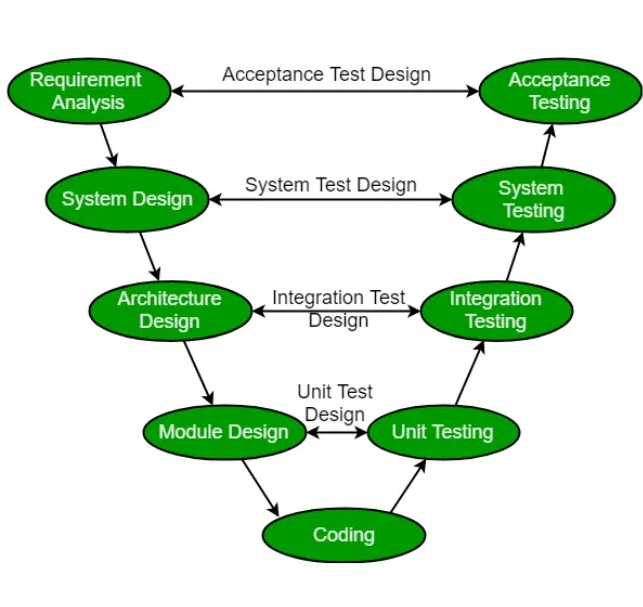

V-Shape
V-mudel on teatud tüüpi SDLC mudel, kus protsess toimub järjestikku V-kujuliselt.
V-mudeli disain
-
Nõuete kogumine ja analüüs: V-mudeli esimene faas on
nõuete kogumine ja selle analüüs.
-
Disain
-
Rakendamine: ehitatakse tarkvara disainist lähtuvalt.
-
Testimine: Testimise etapis tesitakse tarkvara, et see vastaks
kliendi nõudmistele ja oleks kvaliteetne.
-
Tarkvara kasutusele võtt
-
Hooldus: hooldusfaasis hooldatakse tarkvara, et see vastaks jätkuvalt
kliendi vajadustele.
-
V-mudelit kasutatakse sageli ohutuses: kriitilistes süsteemides, nagu lennundus-
ja kaitsesüsteemid, kuna see paneb rõhku põhjalikule testimisele
ja suudab selgelt määratleda tarkvaraarenduse protsessi etapid.

| Positiivsed küljed |
Negatiivsed küljed |
|
|
|
|
|
|
|
|
Allikad:
GeeksforGeeks